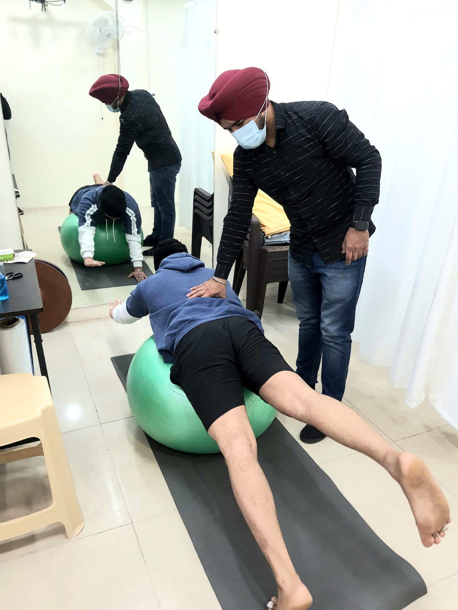

Faith & Care is a trusted, patient-focused rehabilitation centre in Rajouri Garden. We combine evidence-based treatment, advanced techniques and compassionate care to restore mobility, confidence and quality of life.

Hands-on carePersonalised rehabilitationEvery programme starts with a thorough assessment and targets the root cause of pain, injury or restricted movement — never just the symptom.
Comprehensive care for bone, joint, ligament, tendon and muscle conditions, including post-fracture and post-surgical recovery.
Read morePerformance-focused recovery that helps athletes and active people recover safely, prevent re-injury and return with confidence.
Read moreSpecialised support to improve strength, balance, coordination, mobility and independence in daily life.
Read moreHands-on techniques and tailored therapeutic exercise to restore joint mobility, flexibility, posture and functional strength.
Read moreElectrotherapy, cervical and lumbar traction, dry needling, cupping and kinesio taping to support faster recovery.
Read moreProfessional, personalised physiotherapy at home for patients who need expert care in familiar surroundings.
Read moreScientific evidence, clinical expertise and compassionate care come together in every session.
We take time to understand your condition, movement patterns, lifestyle and goals before treatment begins.
We identify the root cause of your pain or restriction and explain the most effective path forward in clear language.
Your plan combines targeted treatment, therapeutic exercise and practical guidance to support long-term progress.
"Good nature and behaviour of doctor. I got shoulder pain relief in just a few sessions."
"Awesome place, very good experience."
"Very good doctor and staff."